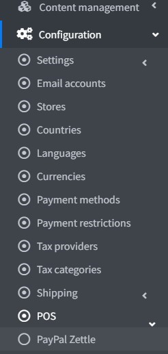
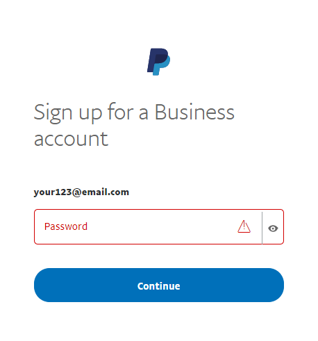

PayPal Zettle
PayPal Zettle 是一套完整的銷售時點情報系統 (POS) 解決方案，讓您能夠接受信用卡、感應式與行動支付。它能與您的 nopCommerce 商店輕鬆同步，協助您無論是在線上、實體店面或隨時隨地，都能順利經營現有的業務，並為未來的銷售做好規劃。使用您的 PayPal 詳細資料即可註冊並在幾分鐘內連結您的帳戶，讓您的營收能直接存入您的 PayPal 帳戶中。
設定 POS 方法
若要設定 PayPal Zettle 外掛，請前往 設定 → POS。接著找到 PayPal Zettle POS 解決方案：

請按照以下步驟設定 PayPal Zettle。
建立 PayPal Business 帳戶
如果您已經擁有 PayPal 帳戶，請直接跳至下一節。
如果您還沒有帳戶，請依照這些指示註冊 Business 帳戶。接著下載 PayPal Zettle POS 應用程式，並訂購您的讀卡機。

Note
如果您已經擁有帳戶，系統會將您重新導向至授權頁面。



設定 PayPal Zettle 外掛
在管理後台開啟 PayPal Zettle 設定頁面。您將會看到以下表單：

前往您的 商戶帳戶。

檢閱資訊並點擊 Create key。系統將會建立一個用戶端識別碼 (Client ID) 以及 API 金鑰。

在 Create API key page 上，點擊 Copy key 並將其貼到此外掛設定頁面的對應欄位中，Client ID 也請比照辦理。

Note
API 金鑰只會顯示一次，請務必妥善備份。
點擊 Save 以儲存外掛設定。
輸入完成後，系統將會顯示目前的連線狀態、中斷連線按鈕以及部分個人檔案詳情。如果在連線過程中發生任何錯誤，或是商店設定與 Zettle 設定檔之間不一致，系統將會顯示警告。為了確保外掛正確運作，我們必須修正這些問題。

商品庫同步
商品庫同步是此外掛的主要功能。同步設定位於同一頁面中獨立的面板內。我們並未將「初始同步」與「更新」分開。所有項目都在同一個地方設定並執行，無論是初始同步還是隨後的定期更新，操作方式皆相同。

Tip
我們在此提供關於如何進行同步的完整說明，且每個項目皆附有提示。
nopCommerce 商店為資料來源，因此商品同步是單向的，即從 nopCommerce 商店同步至 Zettle 目錄。在此過程中，我們可以選擇要刪除目錄中的商品還是保留它們。
同步可以設定為自動（透過排程工作）或由商戶在此頁面手動啟動。若要進行自動同步，我們必須勾選 Enable auto synchronization 並設定 Auto synchronization period。
在同步之前，我們需要選擇想要匯入至 Zettle 目錄的商品。為此，設定下方提供了一個試算表。

只有包含在此試算表中的商品才會進行同步。未來若商品有任何變更（更新詳情、刪除、變更圖片等），這些變更也會同步至目錄。特定商品的同步作業可以隨時暫停（透過 Active 屬性）。
Note
Sync enabled（與 Active 相同）、Price sync enabled、Image sync enabled 以及 Inventory tracking enabled 等設定是在將商品加入表格時應用的，因此這些為預設設定。您也可以針對每個特定商品個別設定。
在同步期間，系統會匯入商品本身或其指定的商品屬性組合。
我們也可以在同步時加入現有的折扣。
庫存同步
此外掛的第二項功能為 Inventory Synchronization（庫存同步）。此同步功能為雙向運作，無論是商店（nopCommerce）端的變更，還是目錄（Zettle）端的變更皆可處理。
為了追蹤商品的庫存，我們需要啟用 Inventory tracking enabled。在下一次同步時，追蹤功能將會啟用並開始同步變更。如果我們不再需要追蹤某個商品，則必須相應地停用此選項。
現在我們應該儲存同步設定並 啟動 同步。
Tip
您可以在記錄中查看同步處理的詳細資訊。

限制商店與顧客角色
您可以將任何付款方式限制在特定商店與顧客角色中使用。這代表該付款方式將僅適用於特定的商店或顧客角色。您可以在外掛清單頁面中進行此設定。
前往 設定 → 本地外掛。找到您想要限制的外掛。以我們的範例來說，是 PayPal Zettle。為了更快速地找到它，請使用頁面上方的搜尋面板，並透過付款方式選項，以 外掛名稱 或 群組 進行搜尋。

點擊 編輯 按鈕，編輯外掛詳情視窗將顯示如下：

您可以設定以下限制：
在 限制顧客角色 欄位中，選擇一個或多個顧客角色（例如：管理員、供應商、訪客），這些角色將能夠使用此外掛。如果您不需要此選項，只需將此欄位留空即可。
Important
為了使用此功能，您必須停用以下設定：目錄設定 → 忽略存取控制清單 (ACL) 規則 (全站)。閱讀更多關於存取控制清單的內容 here。
使用 限制商店 選項將此外掛限制在特定商店使用。如果您有多個商店，請從清單中選擇一個或多個。如果您不使用此選項，只需將此欄位留空即可。
Important
為了使用此功能，您必須停用以下設定：目錄設定 → 忽略「依商店限制」規則 (全站)。閱讀更多關於多商店功能的內容 here。
點擊 儲存。